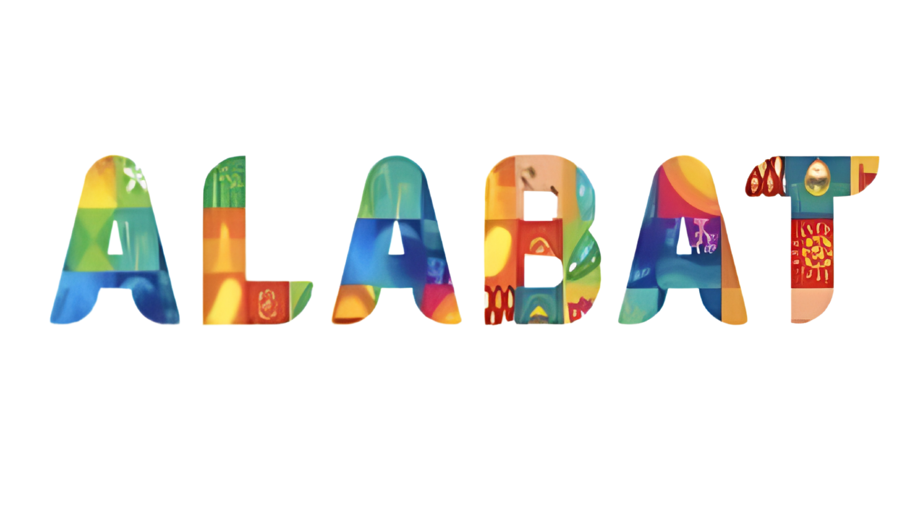
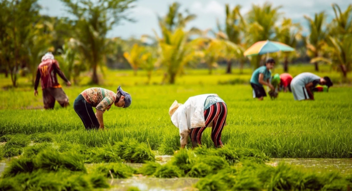
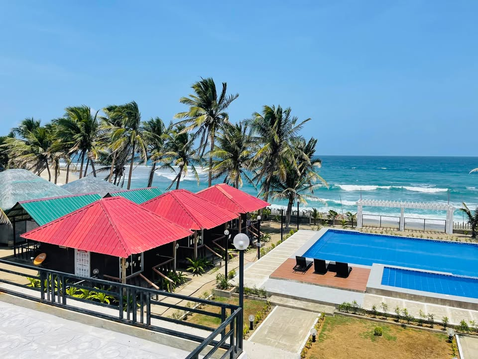

QUEZON, PHILIPPINES



Alabat, officially the Municipality of Alabat (Tagalog: Bayan ng Alabat), is a municipality in the province of Quezon, Philippines. It is a peaceful island town known for its hospitality and rich natural resources.
The town is home to a few speakers of the critically endangered Inagta Alabat language, one of the most endangered languages in the world as listed by UNESCO.
Its first name was Gordo, meaning "fat", due to the island's shape. It was later changed to Gordon, Barcelona, and finally Alabat. The formal establishment of the town occurred in the year 1900.
Before Spanish colonization, the mountains were already inhabited by the “Baluga” (aborigines). Nomadic by nature, they would clean patches of land, plant rice and vegetables, and hunt.
The name Alabat came from the word Alâbât (local Tagalog word for balustrade or balcony).
Another local folklore says that the name 'Alabat' was from Muslim origins where Alabat comes from Allah-bat, and if the word is mixed up actually means Bathala, the local word for god.